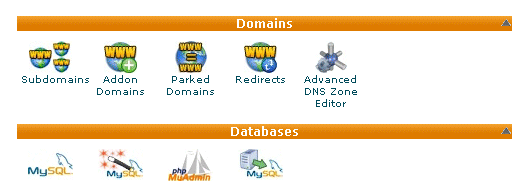
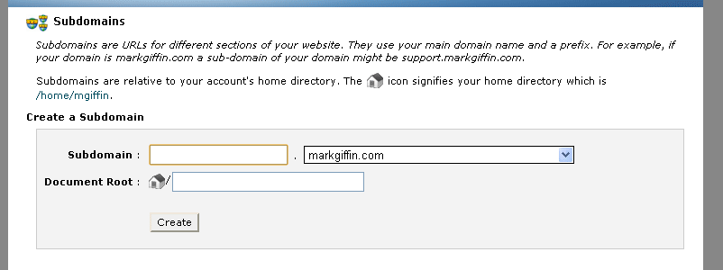
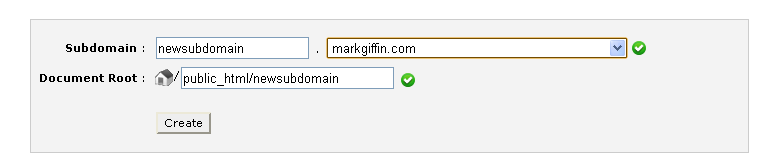
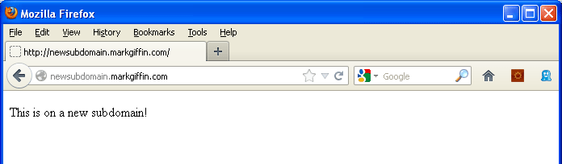

On older versions of Gecko (Firefox OS 2.1, Firefox Desktop/Android 34) you can only have one app per origin. One around this is to use a subdomain for each app. Each subdomain is a different origin, for example app1.example.com, app2.example.com. Creating a subdomain is usually easy to do, and it is free with most domain hosting providers. Typically the hosting provider allows a certain number of free subdomains. Some examples of adding subdomains are given below.
Generic instructions for adding a subdomain
- Log in to your hosting provider's administrative console for your domain.
- Find the page that deals with configuring domains.
- Locate the capability to add a subdomain.
- Add the subdomain, specify where the subdomain's files will be stored, and save your changes.
- Put your app's files on the server where you specified in step 4.
- Verify that the new subdomain exists by going to it in a browser.
The following sections explain how to add a subdomain with specific hosting tools.
Adding a subdomain with cPanel
Here is an example of creating a subdomain with cPanel, which is a web hosting control panel that is used by many hosting providers. Your cPanel page might look different, depending on how it has been configured, but this should give you an idea.
- Log into cPanel.
- Scroll down and find the Domains section.

- Click Subdomains to open the Subdomains page.

- Type the subdomain name in the Subdomain box. For this example we will use "newsubdomain".
- Click in the Document Root box. This displays the path where the files for the new subdomain will be stored. In this example we will use
/public_html/newsubdomain. You can change this if you want your app's files in another location. For example, if the files for your app are inpublic_html/gamedev_com/games/coolgame/, then type that path in the Document Root box. - Click the Create button and you should get a confirmation message.
- Put your app's files in the directory that you specified for the subdomain. For this example we will use a simple HTML file named
index.htmlthat displays "This is on a new subdomain!" - Confirm that the new subdomain exists. Open a browser and type in the new domain name. In this example the following appears:

Adding a subdomain with Go Daddy
Here is a video of how to add a subdomain to a domain hosted by Go Daddy.